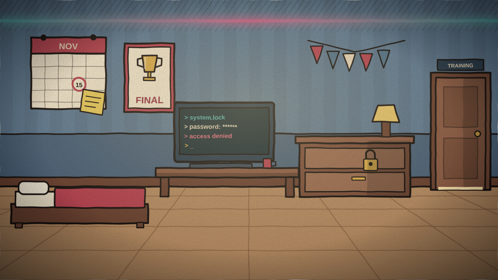
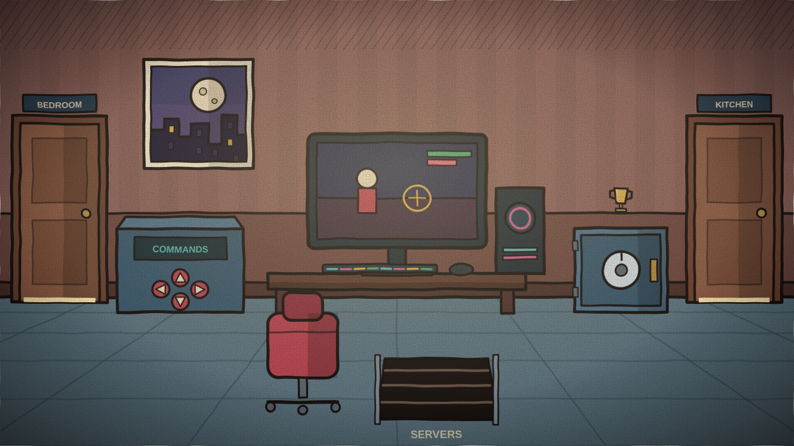
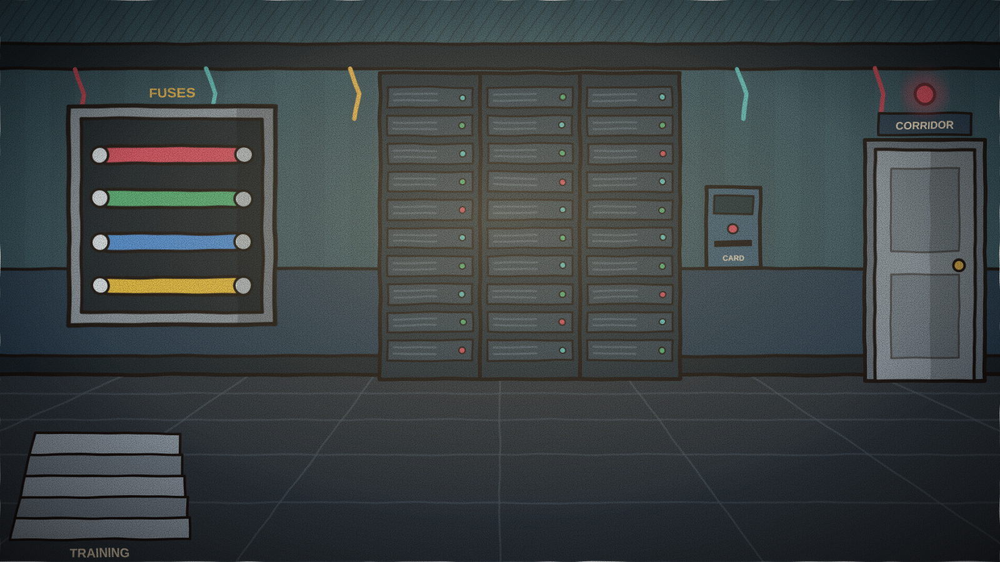
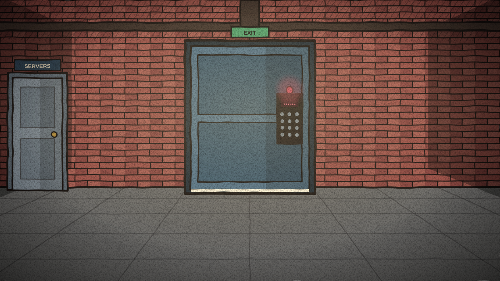

Locations
The gaming house has five explorable rooms in Kairo’s private suite. Doors and a trapdoor connect them, and some clues and mechanisms work across different rooms.
House map
Overview
| Location | Objects | Connections |
|---|---|---|
| Kairo’s Bedroom | 3 | Training Room |
| Training Room | 3 | Bedroom, Kitchen, Servers |
| Kitchen | 2 | Training Room |
| Server Room | 2 | Training Room, Corridor |
| Exit Corridor | 1 | Servers |
Kairo’s Bedroom

The private suite’s entry point, through the main door shown in The Story. The service exit is elsewhere, reached through the Server Room. The calendar places the final on November 15 and helps explain the first clues. The drawer and terminal reveal information used in other rooms.
- Championship calendar
- Locked drawer
- Bedroom terminal
Training Room

The command panel enables media access on the PC. Its file requires binary conversion; an optional calculator explains the process and pauses the countdown while open. This room also leads to the Kitchen and the Server Room trapdoor.
- Command panel
- Training PC
- Trophy safe
Kitchen

A support space for the training routine. The refrigerator holds an item needed at the servers. Ordinary objects can also be inspected; look beyond the electronic equipment.
- Locked refrigerator
- Trash bin
Server Room

Server racks, cabling and a main power panel. This technical hub powers the systems and connects to the Training Room by a trapdoor and to the Exit Corridor by a door.
- Fuse box
- Server rack
Exit Corridor

This corridor leads to the service exit, a different door from the main entrance through the bedroom. Its programmable lock requires a six-digit PIN. The ending depends on the time remaining, mistakes and items collected.
- Programmable lock